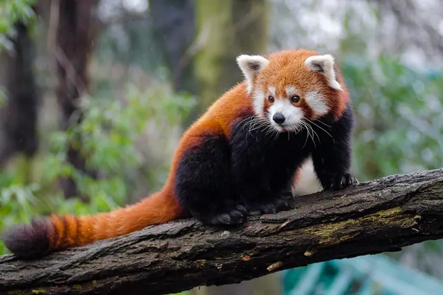

Giant panda vs red panda: the differences
Despite the shared name, giant pandas and red pandas are not close relatives. The giant panda is a black and white bear weighing about 70 to 125 kg; the red panda is a cat sized, russet tree climber weighing about 3.6 to 7.7 kg and the only living member of its own family. What they share is a bamboo diet, a wrist bone "false thumb" for gripping it, and mountain forest homes in Asia.

Side by side
| Giant panda | Red panda | |
|---|---|---|
| Scientific name | Ailuropoda melanoleuca | Ailurus fulgens (and A. styani where split) |
| Family | Ursidae (bears) | Ailuridae (only living member) |
| Weight | Females 70 to 100 kg; males 86 to 125 kg | About 3.6 to 7.7 kg |
| Size | 1.2 to 1.8 m long; 60 to 90 cm at the shoulder | Body 56 to 62.5 cm plus a 37 to 47 cm tail |
| Coat | Black and white | Russet red with dark legs and belly, pale face markings, ringed tail |
| Tail | Short stub | Long and bushy, used for balance and warmth |
| Bamboo share of diet | About 99%; eats stems, shoots and leaves | About 95%; picks leaf tips and shoots |
| Daily food | About 12 to 45 kg of bamboo depending on source and plant part | About 1 to 2 kg (20 to 30% of body weight) |
| Wild range | Central China only (Sichuan, Shaanxi, Gansu) | Nepal, India, Bhutan, northern Myanmar, southwest China |
| Typical elevation | About 1,200 to 3,500 m | Generally above about 1,200 m |
| Lifestyle | Mostly on the ground, climbs well; active in long feeding bouts day and night | Mostly in trees; most active at dawn and dusk |
| Cold weather | Does not hibernate; stays active | Can enter a dormant, low metabolism state |
| Young per litter | One or two; mother usually raises one | Usually two |
| Newborn | About 85 to 140 g, pink and nearly hairless | About 90 to 110 g, fully furred |
| Lifespan | About 15 to 20 years wild; about 30 in human care | Up to about 23 years in human care |
| IUCN status | Vulnerable (2016) | Endangered (2015) |
| Wild population | Nearly 1,900 (China, 2025 data) | Fewer than 10,000 estimated (IUCN 2015), decreasing |
| First described by Western science | 1869 | 1825 |
What they have in common
- A bamboo diet on a carnivore's gut. Both belong to the order Carnivora and have a simple carnivore type digestive system, so both digest bamboo poorly and must eat a lot of it.
- A false thumb. Both have an enlarged wrist bone that works like a thumb for holding bamboo. Because the two lineages are not closely related, this is usually described as convergent evolution: the same solution evolving separately.
- Cool mountain forests with dense bamboo understories in Asia, and overlapping ranges in parts of southwest China.
- Short breeding windows of a few days or less each year, with delayed implantation timing births.
- Threats from habitat loss and fragmentation.
How to tell them apart in one second
Black and white and bear sized: giant panda. Red, cat sized, with a long striped tail and up a tree: red panda. If you are unsure from a photo, look at the tail. Giant pandas have a short stub; red pandas have a long, ringed, bushy tail.
Frequently asked questions
Which came first, the red panda or the giant panda?
The red panda was described by Western science first, in 1825; the giant panda followed decades later, in 1869. The name panda originally belonged to the red panda.
Is a red panda a baby giant panda?
No. They are different species in different families. Even a newborn giant panda is pink and nearly hairless, while red panda cubs are born furred. Adult red pandas weigh about 3.6 to 7.7 kg; adult giant pandas weigh about 70 to 125 kg.
Why are both called pandas?
The name was first used for the red panda. When the giant panda became known, the two shared a bamboo diet and a wrist bone false thumb, and the giant panda came to share the name.
Sources
- Smithsonian's National Zoo and Conservation Biology Institute: Giant panda
- San Diego Zoo Wildlife Alliance, Animals and Plants: Giant panda
- Smithsonian's National Zoo and Conservation Biology Institute: Red panda
- San Diego Zoo Wildlife Alliance, Animals and Plants: Red panda
- IUCN Red List: Giant panda, Ailuropoda melanoleuca (2016 assessment)
- IUCN Red List: Red panda, Ailurus fulgens (2015 assessment)
- Hu et al. (2020), Genomic evidence for two phylogenetic species and long term population bottlenecks in red pandas, Science Advances